A1 Free · runs in your browser
Your spreadsheet, finally readable.
Drop in an Excel or CSV file. SheetPilot works out what's in it, how it's calculated and what stands out, then turns it into an interactive dashboard in seconds. Nothing is uploaded.
C3 How it works
Four steps. About a minute.
1 · Drop in your sheet
Upload an Excel or CSV file, paste cells from Google Sheets, or try a sample. Messy headers, several tabs and day-first dates are all fine. Excel (.xlsx) gives the best results, because it keeps your formulas.

2 · It reads it for you
SheetPilot works out what each column is, how the numbers are calculated, which direction is good, and what to compare. It tells you how it read the sheet and lets you correct any choice.
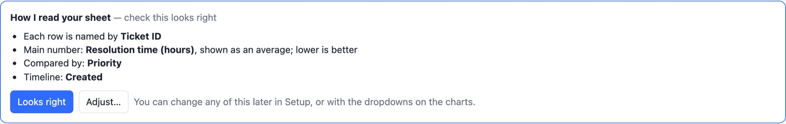
3 · Explore and restyle
Click a bar to filter everything. Change the measure or the grouping. Click the palette icon to choose a template, a font and an accent colour that fit your team or brand.
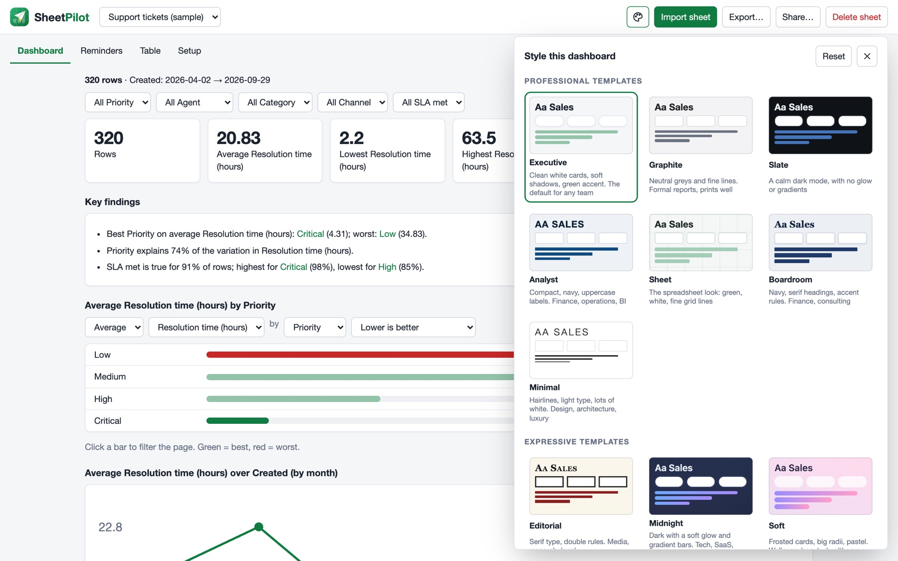
4 · Export or share
Tick the sections you want and download one web page, a PDF or the rows as CSV. Or create a link: a view-only snapshot, or an interactive copy. No server and no account.
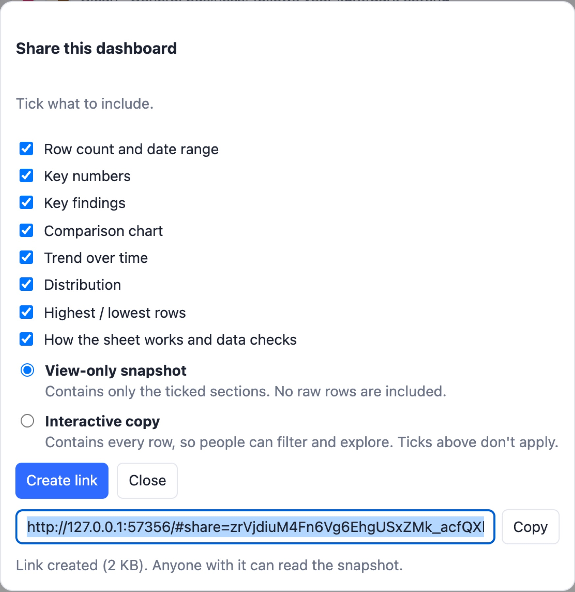
D4 Features
Built for the spreadsheets you already have.
Reads messy sheets
Finds the real header under title rows, merges repeated headers with their labels, and copes with semicolons, several tabs and ambiguous dates.
08.10.2026 → 8 OctFinds the logic
Shows your real Excel formulas in plain words, or works out sums, products and ratios from the values, and flags rows that break them.
Revenue = Units × Unit priceSays what stands out
Plain-language findings, including when nothing stands out, plus data checks for gaps, stray “N/A” entries and repeated IDs.
“Enterprise is 83% of revenue”Explains itself
Shows how it read the sheet, flags what it is unsure about, and remembers every correction you make.
Lower is better · unsureFourteen templates
Professional ones first, expressive ones after. They differ in typography, outlines and chart shapes, plus your choice of font and accent colour.
Executive · Graphite · Slate · Analyst…Export and share
Pick the sections to include, then export a web page, PDF or CSV, or share a snapshot or interactive link.
dashboard.html · share linkReminders
Optional: turn follow-up or review dates into an overdue, today and coming-up list.
Next review − 30 daysE5 Templates
Same data. A look that fits.
Fourteen templates. Start with the professional ones: Executive, Graphite, Slate (a calm dark mode) and Analyst. Prefer something with more character? Blueprint, Notebook and Terminal are there too.

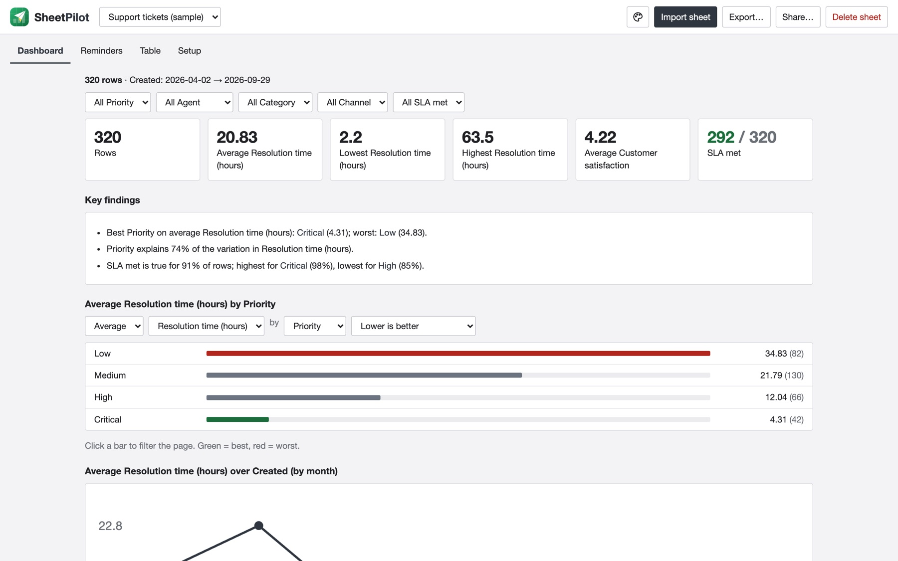
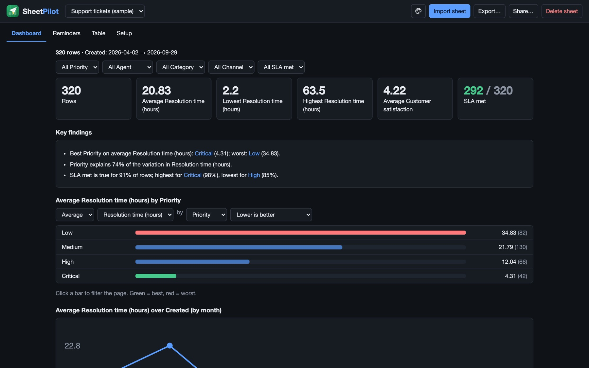
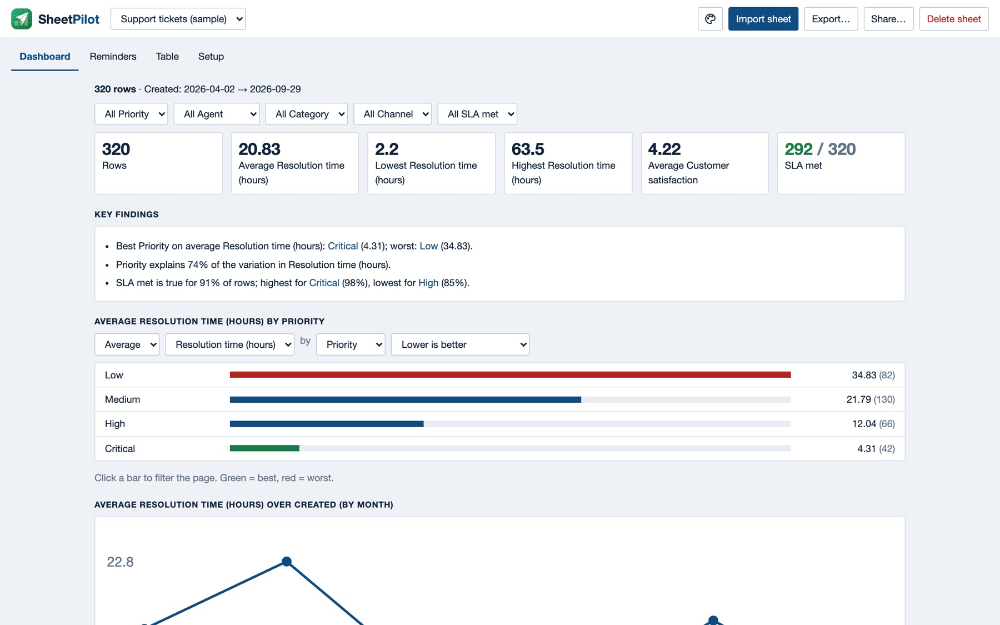
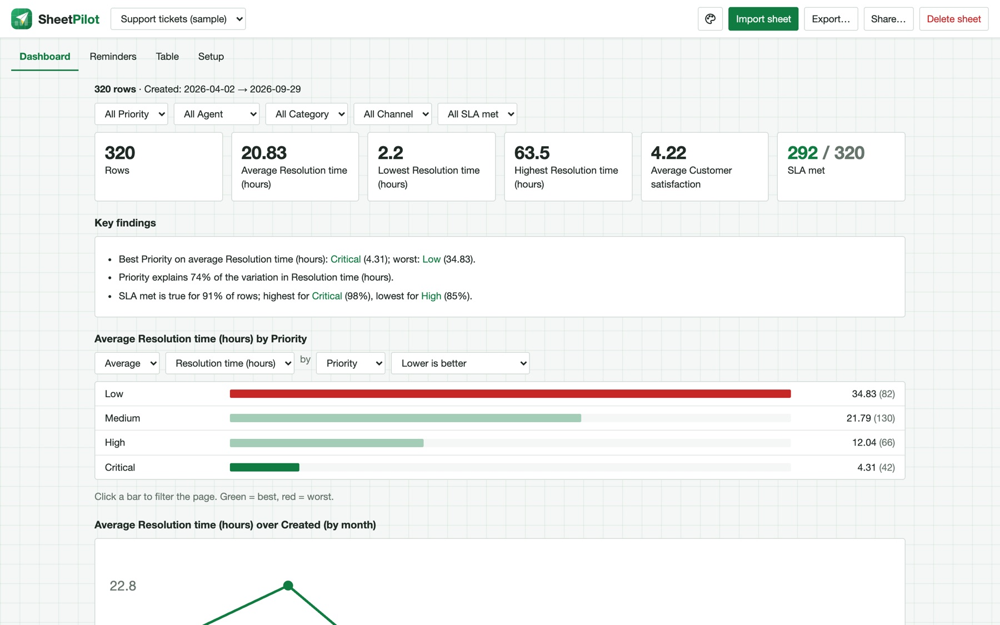
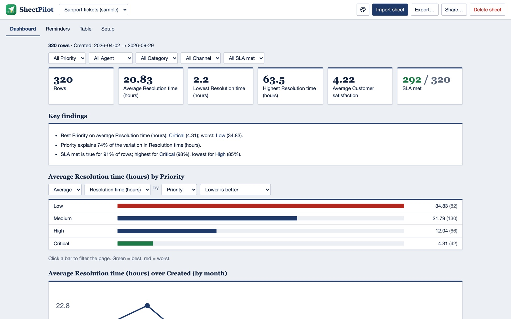
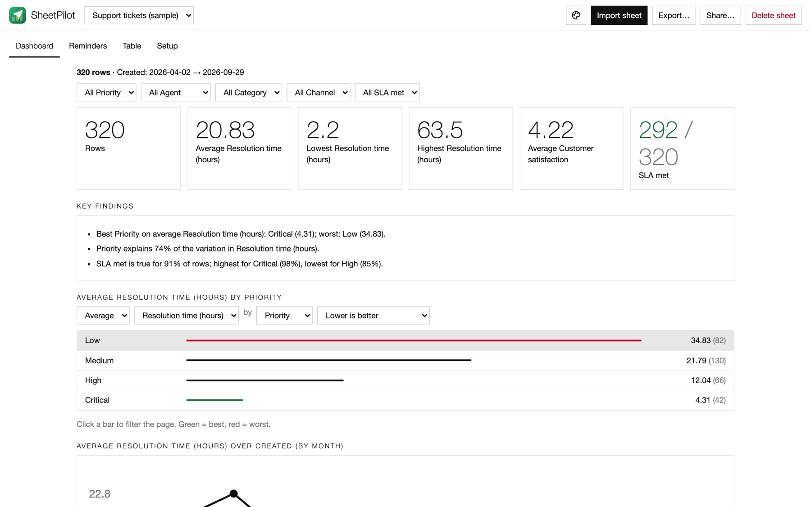
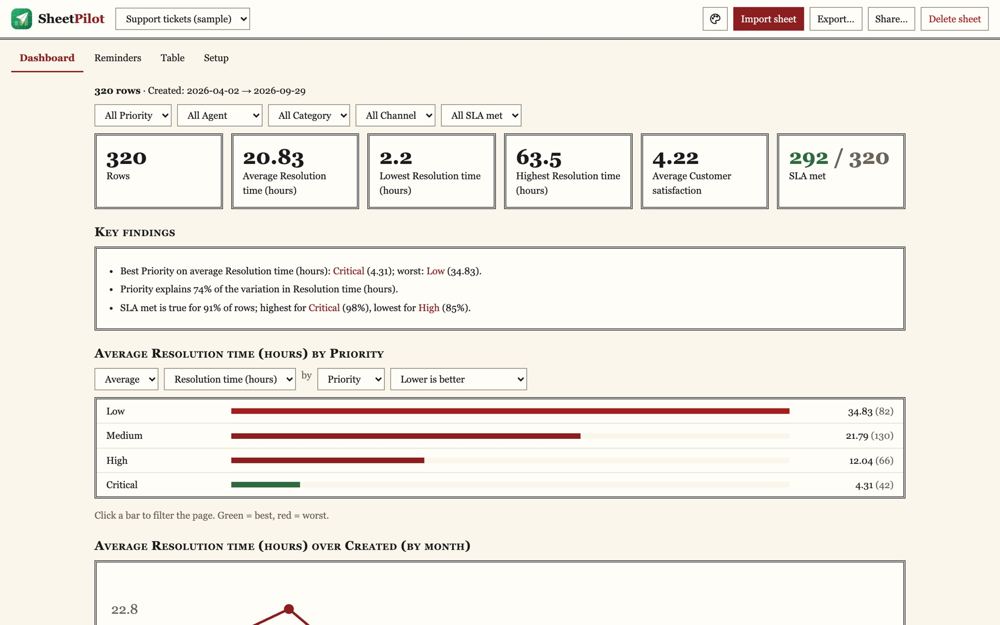
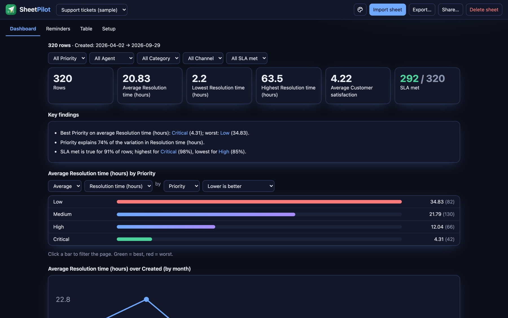
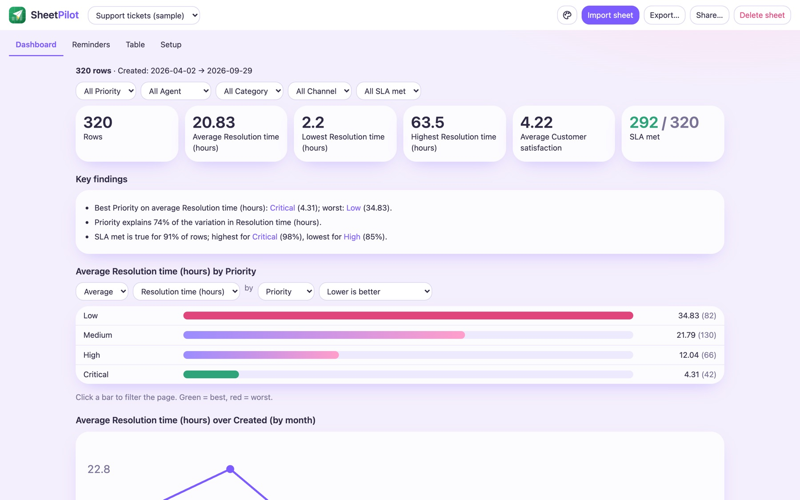
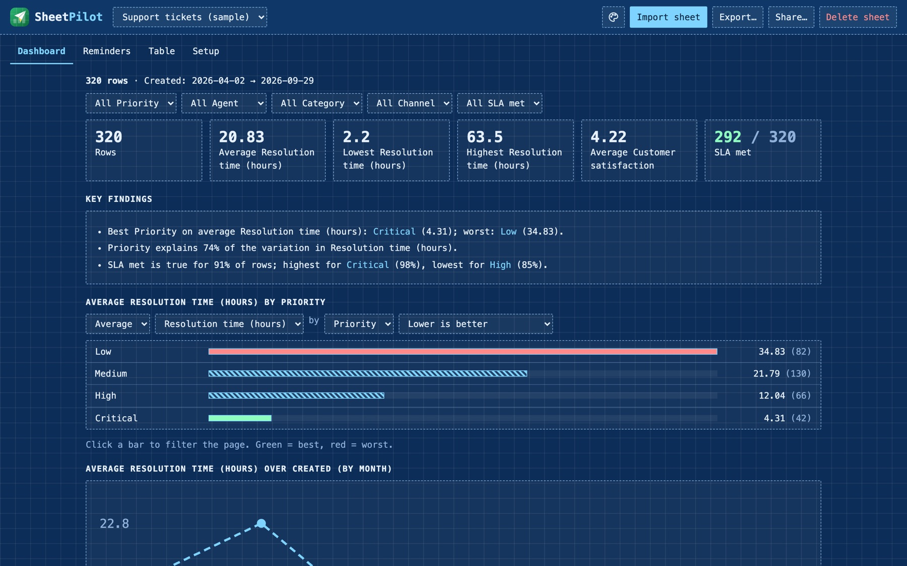
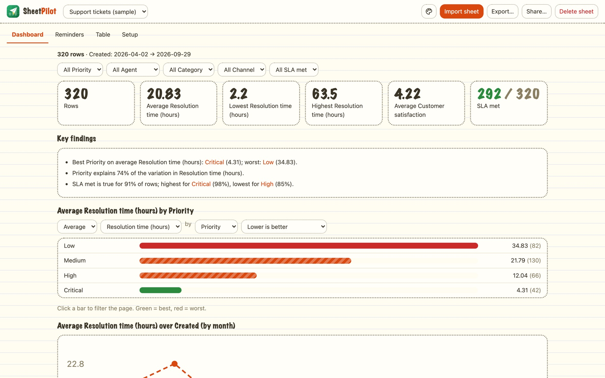
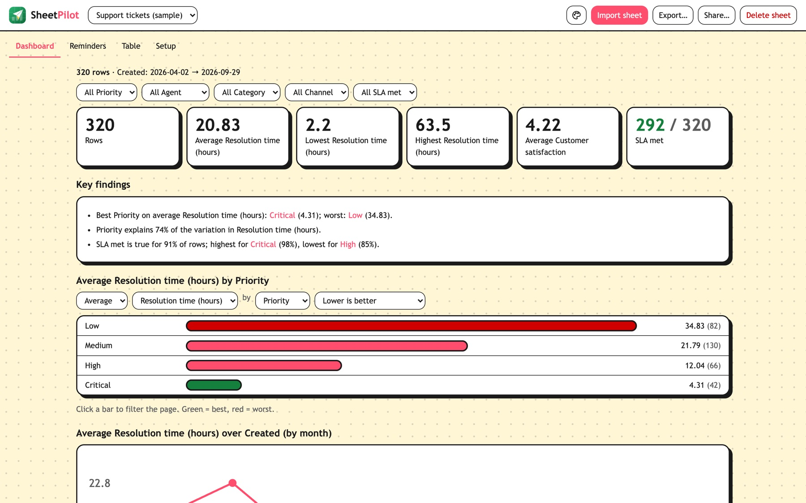
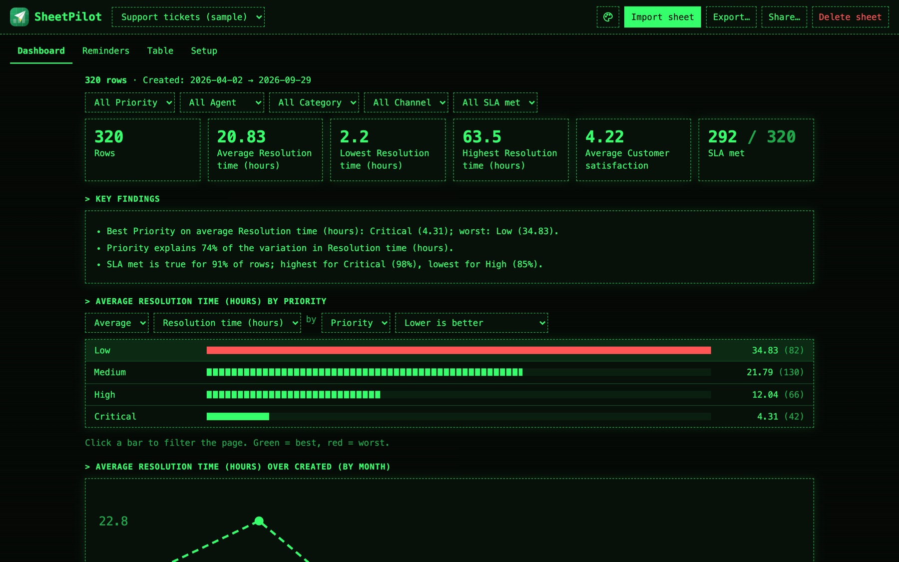
One icon. Template, font, colour.
Click the palette in the top bar. Every change is live, saved with the sheet, and carried into exports and share links.
- Template: fourteen looks with live previews, professional ones first.
- Font: keep the template's, or pick Sans, Serif, Mono, Rounded, Humanist or Slab.
- Accent colour: eight colours to match a brand.
F6 For the best results
Upload the Excel file, not a CSV.
A CSV is only the final values. An Excel file keeps the formulas behind them, every tab and real dates, so SheetPilot can show how your numbers are calculated instead of guessing.
Excel (.xlsx)
From Google Sheets: File → Download → Microsoft Excel.
- Shows your real formulas, e.g.
=SUM([Quality]:[Teamwork]) - Reads every tab, and skips empty template tabs
- Keeps proper dates and number formats
- Explains special cases, such as “N/A counts as 5”
CSV or pasted cells
Works, with less to go on.
- Values only: formulas are lost in the export
- Calculations are inferred from the numbers
- One sheet at a time
- Dates may be ambiguous, so SheetPilot has to guess
G7 Private by design
Your sheet stays on your computer.
No upload
Everything runs in your browser. Files are read on your device and never sent anywhere.
No account
Nothing to sign up for, nothing to pay. Open it and drop a file.
Anonymous counts only
The site and app count page visits, with no cookies or personal data. Your sheet is never part of it, and share links skip the counter.
Links you control
A share link carries its data inside it, so only share what the recipient may read.
Safe snapshots
Shared snapshots open in a sandbox with scripts switched off.
Open source
Read the code, run it yourself, or host it on your own site.
Why SheetPilot exists
Spreadsheets are where most small teams keep their customers, tickets, reviews and numbers. They're flexible and familiar, but they only store information; they don't tell you what it means.
Most dashboard tools ask you to rebuild your data in their format first. SheetPilot starts from the sheet you already have, works out its structure and logic, and gives you the story: free, in your browser, with nothing to set up.
Your spreadsheet. Now working for you.
Free, open source, and ready in a few seconds.